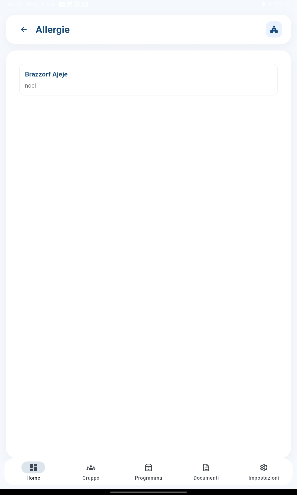
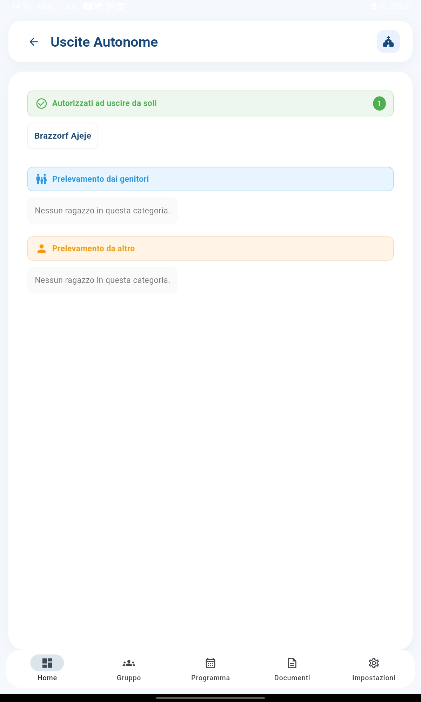

Informazioni critiche per la sicurezza dei ragazzi, sempre visibili e protette
Le allergie e le autorizzazioni alle uscite autonome sono informazioni fondamentali per la sicurezza dei ragazzi durante gli incontri di catechismo. CatechHub le rende visibili in ogni schermata dell'app con badge colorati e avvisi immediati, così non rischi mai di dimenticarle.
Per ogni ragazzo puoi registrare le allergie.

Puoi registrare se un ragazzo è autorizzato a uscire da solo al termine dell'incontro, senza aspettare un genitore. Tre possibilità:
Come per le allergie, un badge arancione "Uscita autonoma" appare accanto al nome del ragazzo in tutte le schermate dell'app.

Oltre ai badge nelle schermate principali, ci sono pagine apposite che mostrano l'elenco completo e filtrato dei ragazzi con allergie o con autorizzazioni alle uscite. Utili per una verifica rapida prima di un evento o di una gita.
Le allergie sono dati relativi alla salute e richiedono protezioni speciali. CatechHub adotta le seguenti misure: